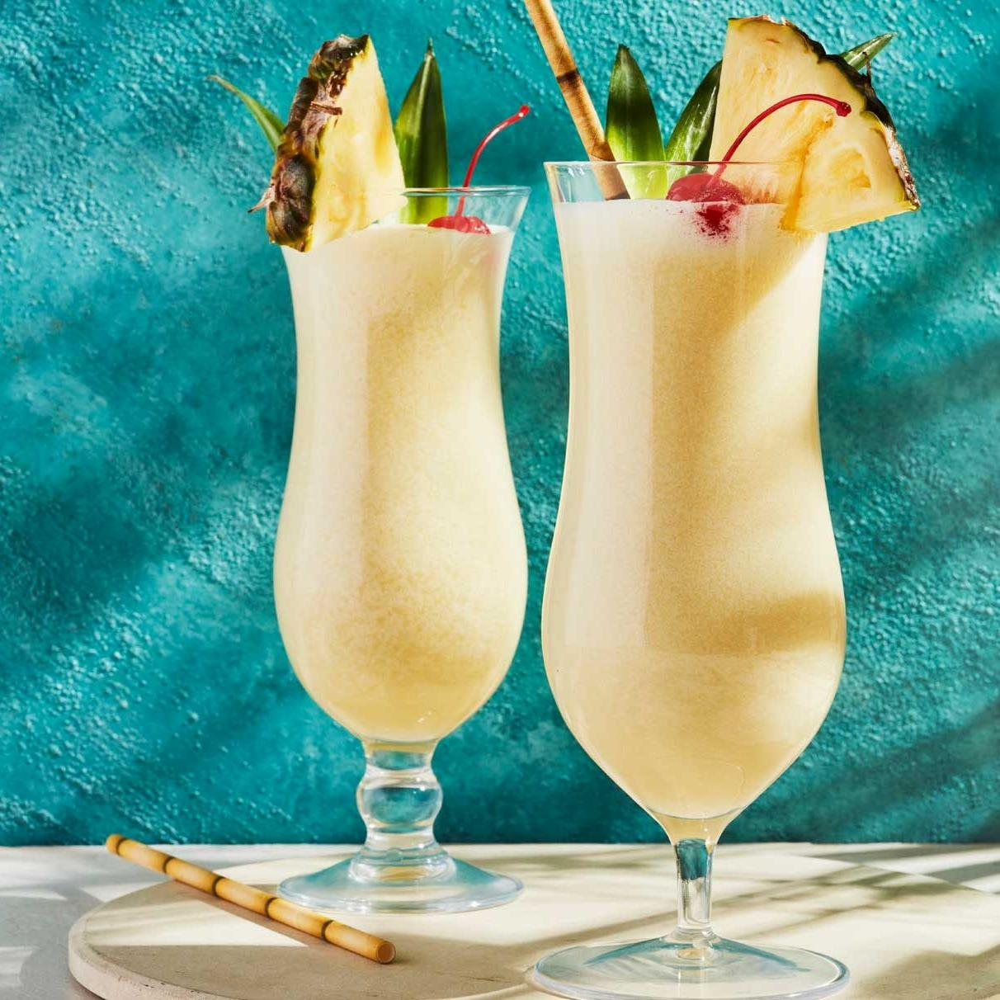

Piña Colada

Piña colada é um coquetel doce feito com rum, leite de coco e suco de abacaxi. Geralmente é servido batido ou mexido com gelo. Sua origem é de Porto Rico. Piña colada pode se traduzir como "abacaxi coado".
Ingredientes:
- 60 ml de Rum Branco
- 90 ml de suco de abacaxi natural
- 30 ml de leite de coco
- 15 ml de xarope de açúcar
Modo de Fazer:
- Adicione todos os ingredientes no liquidificador e bata até obter uma mistura homogênea.
- Dentro do liquidificador, adicione algumas pedras de gelo e bata novamente, pare quando não ouvir mais barulho de gelo batendo.
- Coe para uma taça Hurricane ou Copo Longo, decore com uma fatia de abacaxi e uma cereja, e sirva-se.